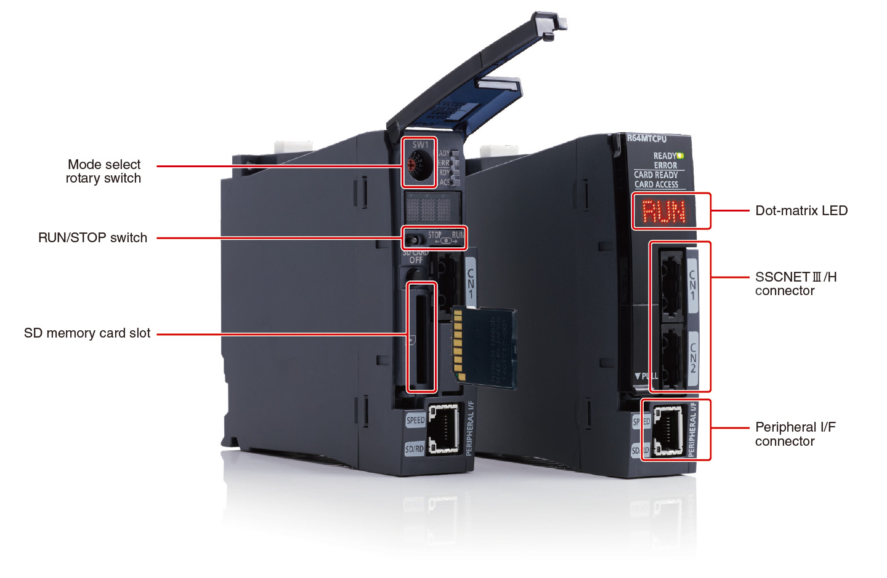
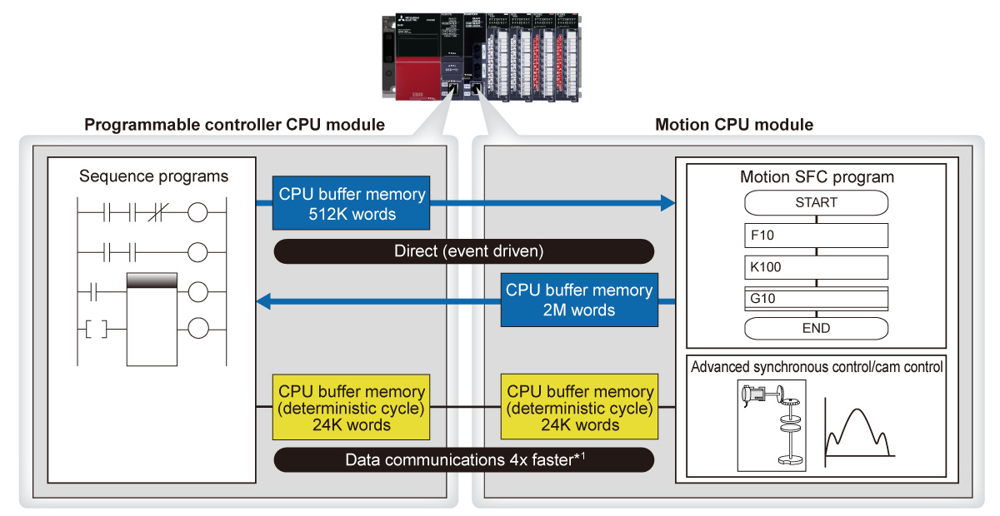
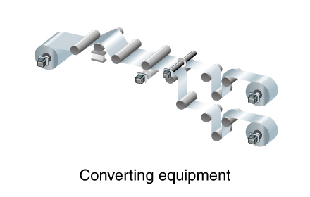
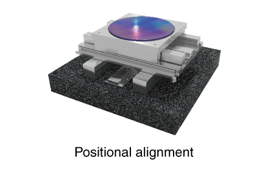
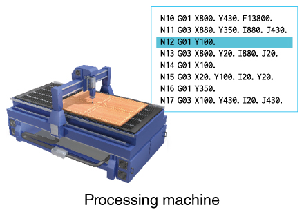
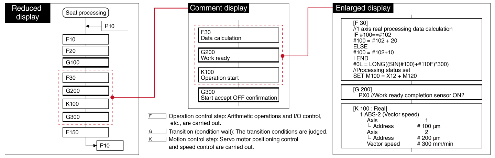

Controllers MELSEC iQ-R Series Fitur Produk -CPU-

Modul CPU gerak
Modul CPU gerak digabungkan ke dalam konfigurasi beberapa CPU, memisahkan beban CPU secara efisien.
Kontrol umum berkecepatan tinggi dan kontrol gerakan dengan akurasi tinggi tercapai, sehingga berkontribusi pada pemrosesan mesin berkecepatan tinggi dan akurasi tinggi.
Antarmuka

Fitur<sup>Komunikasi berkecepatan tinggi dan berkapasitas besar antara modul CPU</sup>
- Komunikasi data berkapasitas besar
- Dalam konfigurasi CPU ganda dengan modul CPU pengontrol terprogram dan modul CPU gerak, area memori besar yang digunakan bersama untuk komunikasi data berkecepatan tinggi disediakan
- Komunikasi berkecepatan tinggi sangat berguna ketika ada kebutuhan untuk mentransfer sejumlah besar informasi secara instan seperti data cam, sehingga menyederhanakan pemrograman lebih jauh lagi
- Berguna untuk lini produksi yang merespons produksi dengan variasi tinggi dan kuantitas variabel di mana data resep perlu langsung tercermin pada operasi motor sesuai dengan perintah dari komputer

- *1.Dibandingkan dengan produk Mitsubishi Electric saat ini.
Berbagai aplikasi mudah direalisasikan
- Kontrol sinkron
- Sistem penglihatan
- Kode G
- Konfigurasi sederhana dari peralatan konversi yang memerlukan sinkronisasi presisi tinggi antara motor dan pemesinan stabil dengan tegangan konstan

- Dengan bekerja sama dengan sistem penglihatan, dimungkinkan untuk mengonfigurasi perangkat penyelarasan yang bergerak secara akurat, cepat, dan terus-menerus sesuai dengan posisi perangkat

- Eksekusi program G-code yang digunakan dalam mesin pengolah memungkinkan mesin perkakas dan pelubangan sederhana

Program SFC gerak dengan langkah-langkah pemrosesan yang mudah dipahami
- Diagram alir
- Responsivitas peristiwa
- Modul CPU gerak diprogram menggunakan bahasa tipe SFC*2 yang memungkinkan pemrograman dalam langkah-langkah yang dapat diidentifikasi dengan jelas
- Program SFC gerak sangat berguna untuk peralatan dan jalur produksi yang membutuhkan respons cepat
- *2.SFC: Bagan Fungsi Sekuensial
Program SFC Gerak

Spesifikasi
Spesifikasi modul CPU Motion
MT SFC : Motion SFCINS : Dedicated instruction
| Item | R16MTCPU | R32MTCPU | R64MTCPU |
|---|---|---|---|
| Max. number of control axes | 16 | 32 (16 axes × 2 lines) | 64 (32 axes × 2 lines) |
| Operation cycle setting (ms) | 0.222, 0.444, 0.888, 1.777, 3.555, 7.111 |
0.222, 0.444, 0.888, 1.777, 3.555, 7.111 |
0.222, 0.444, 0.888, 1.777, 3.555, 7.111 |
| Programming language | MT SFCINS |
MT SFCINS |
MT SFCINS |
| Servo program capacity (step) | 64K | 64K | 64K |
| Number of positioning points | 6400 (positioning data can be designated indirectly) | 6400 (positioning data can be designated indirectly) | 6400 (positioning data can be designated indirectly) |
| Servo amplifier network | SSCNETⅢ/H (1 line) | SSCNETⅢ/H (2 lines) | SSCNETⅢ/H (2 lines) |
| Max. distance between stations (m) | 100 | 100 | 100 |
| Interpolation | |||
| Linear interpolation (axis) | Max. 4 | Max. 4 | Max. 4 |
| Circular interpolation (axis) | 2 | 2 | 2 |
| Helical interpolation (axis) | 3 | 3 | 3 |
| Control mode | |||
| Positioning control | ● | ● | ● |
| Continuous path control | ● | ● | ● |
| Position follow-up control | ● | ● | ● |
| Advanced synchronous control | ● | ● | ● |
| Speed-torque control | ● | ● | ● |
| G-code control*3 | ● | ● | ● |
| Acceleration/deceleration control | |||
| Trapezoidal acceleration/deceleration | ● | ● | ● |
| S-curve acceleration/deceleration | ● | ● | ● |
| Advanced S-curve acceleration/deceleration | ● | ● | ● |
| Antarmuka | |||
| PERIPHERAL I/F | ● | ● | ● |
| SD memory card | ● | ● | ● |
| Function | |||
| Absolute position system*4 | ● | ● | ● |
| Mark detection function | ● | ● | ● |
| Digital oscilloscope function | ● | ● | ● |
| Driver communication function | ● | ● | ● |
- *3.Kontrol G-code tersedia dengan menginstal pustaka add-on kontrol G-code. Untuk informasi lebih lanjut, silakan hubungi kantor penjualan atau perwakilan Mitsubishi Electric setempat.
- *4.Didukung saat baterai terhubung ke penguat servo. Baterai tidak diperlukan saat menggunakan motor servo yang dilengkapi dengan enkoder posisi absolut tanpa baterai.